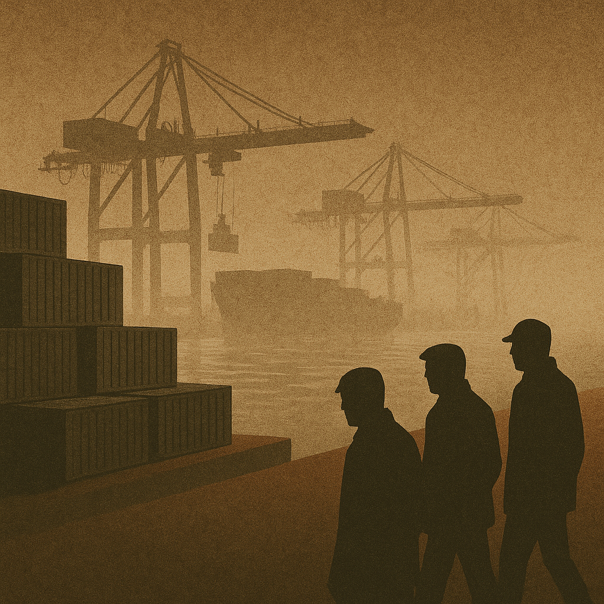

Publicado em 2025-05-15 13:17:32
Portugal, outrora ponto estratégico das descobertas marítimas, está hoje a tornar-se um entreposto moderno — mas sombrio. Já não de especiarias nem de saberes, mas de droga em larga escala. Toneladas de cocaína provenientes da América do Sul entram no continente europeu através de portos portugueses, sob o olhar impotente — ou por vezes cúmplice — das instituições.
A posição geográfica de Portugal é uma bênção para o comércio legítimo, mas um presente envenenado quando não há fiscalização eficaz nem vontade política para confrontar as redes criminosas. O porto de Sines, por exemplo, é um dos maiores da Europa, movimentando milhares de contentores por semana. Mas a capacidade de inspeção é limitada: apenas uma ínfima percentagem é verificada com rigor.
O que entra escondido no meio de bananas, maquinaria ou madeira tropical, sai distribuído pela Europa com eficácia militar. Mafias colombianas, mexicanas, brasileiras e dos Balcãs já operam em solo português. Algumas investem, lavam dinheiro, adquirem imóveis e constituem empresas de fachada. Outras penetram os circuitos logísticos, corrompem operadores portuários e moldam o submundo com mão invisível.
A Polícia Judiciária tem feito um trabalho meritório, com várias apreensões relevantes. Mas é uma luta desigual. Enquanto uma tonelada é capturada, dez escapam. E o sistema judicial, emperrado e moroso, dificulta a responsabilização e não oferece o efeito dissuasor necessário.
Pior ainda: a teia do narcotráfico exige a colaboração passiva ou ativa de elementos corrompidos dentro do Estado. Ninguém movimenta dezenas de toneladas de droga sem o silêncio cúmplice de autoridades aduaneiras, alfândegas, políticos locais ou operadores económicos. O crime organizado só floresce onde encontra terreno fértil — e Portugal, neste momento, oferece clima ideal: pouca vigilância, pouca punição, e uma paz aparente que esconde o crescimento do submundo.
Tudo isto tem consequências brutais. Não só o país se torna corredor de tráfico, como passa a atrair criminalidade violenta, lavagem de capitais e infiltração em setores estratégicos da economia. É uma bomba-relógio social e institucional.
Portugal precisa de acordar. De exigir reforço urgente da fiscalização portuária. De dotar a PJ e o Ministério Público de meios e independência real. De blindar as instituições contra infiltrações criminosas. E, sobretudo, de reconhecer: o narcotráfico já cá está. E está a montar quartel-general.
Se o país não agir com coragem e transparência, corre o risco de deixar de ser apenas um ponto de entrada — e passar a ser o centro logístico do narcotráfico europeu.
Francisco Gonçalves in Fragmentos do Caos